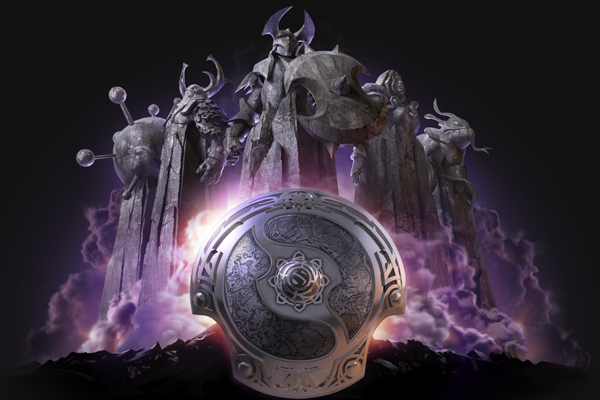
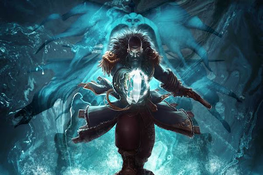

About Dota 2
Dota 2, being the game played at the international, is a free MOBA (multi-player online battle arena) published by
the Valve corporation. Two teams of 5 battle against eachother in a bid to destroy the enimies ancient, all the while
gathering experience gold and to improve their hero and give themselves an advantage in battle. The game has 119 heros
to chose from at the start of each battle to adapt your strategy around.

A breif history of Dota
Dota is an abreviation for Defence of the Aincients. Dota 2's predacesor, unserprisingly named Dota, was a modified version of another game, Warcraft 3. The modification gained
popularity in the warcraft comunity. A large number of the heros in the modern Dota 2 originated from the days of becoming
a modification of Warcraft 3, including Juggernaught (originaly Yaniro), Natures prophit (originaly Furion) and Underlord
(he liked his name, so we didn't change it). Since Dota 2 became publicly available in 2013, there have been consistent updates to the games,
creating the battlefeild we call Dota 2 today.
